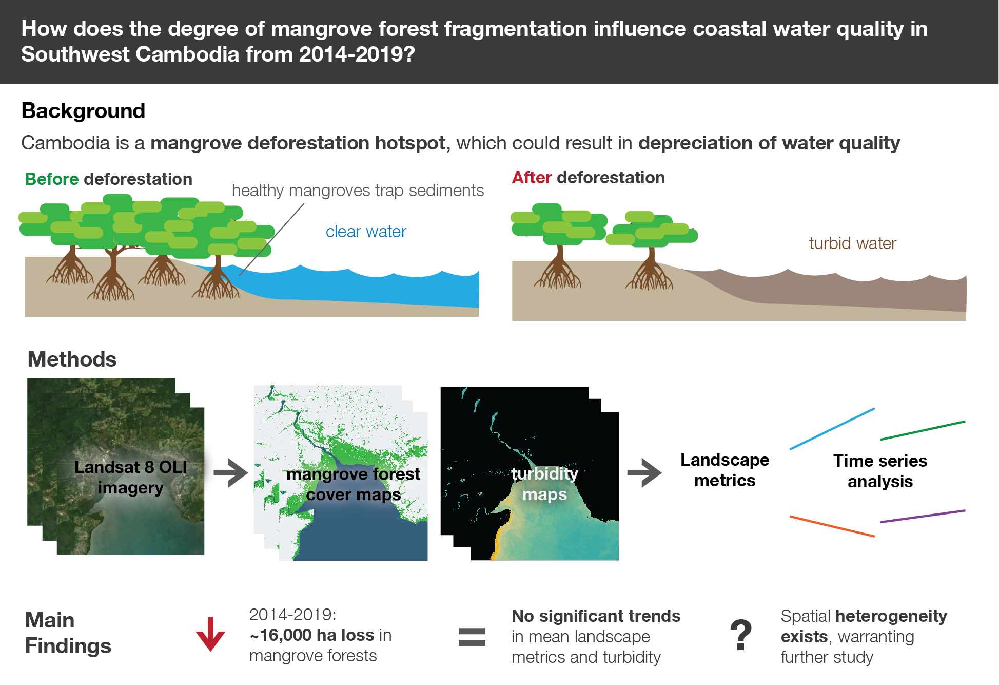
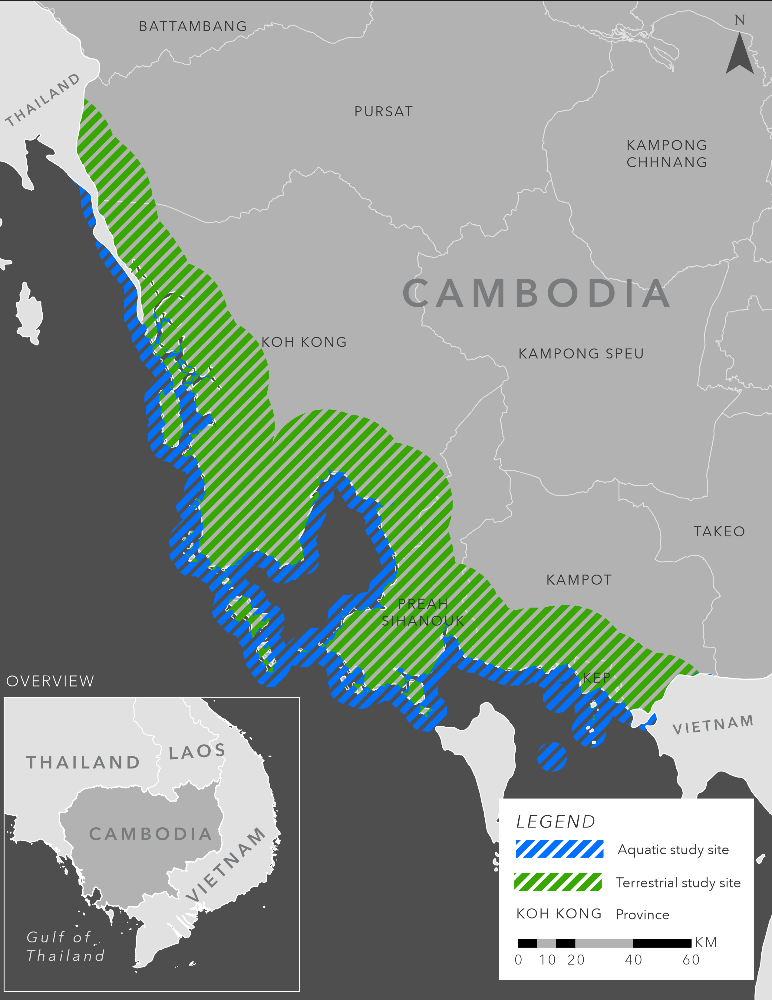
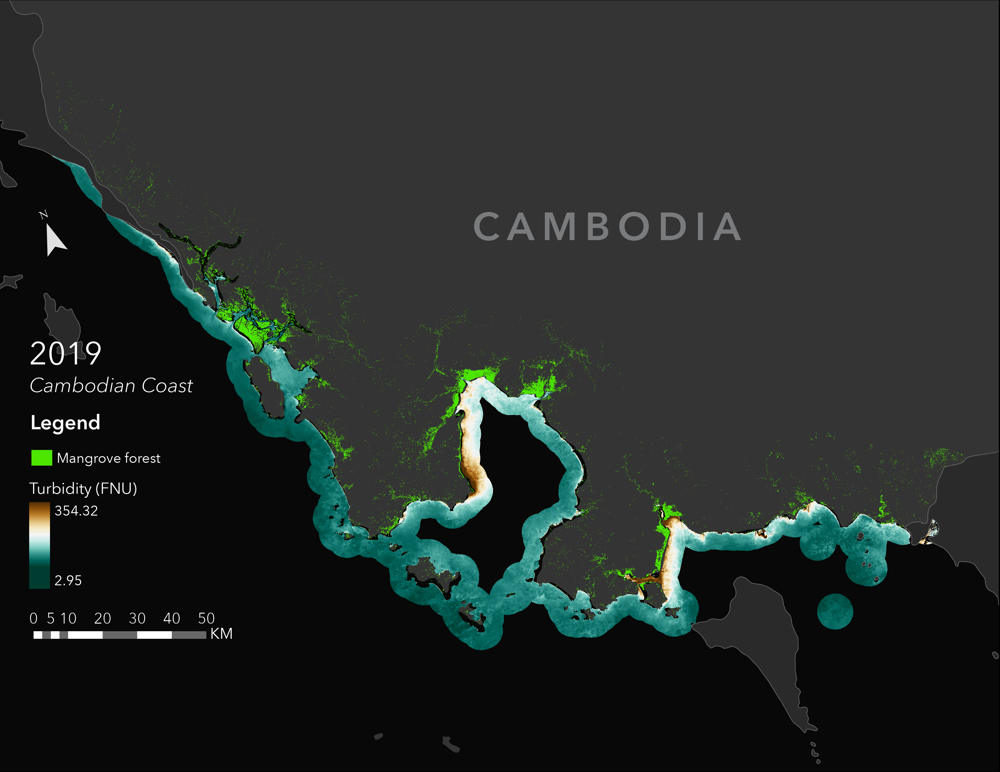
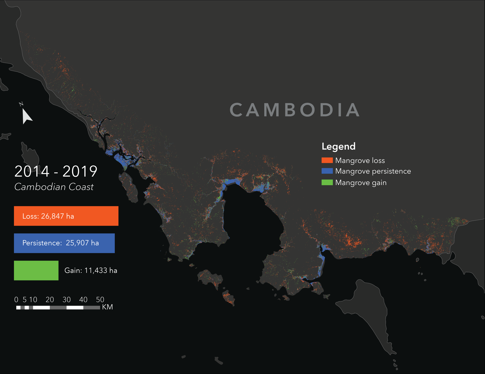
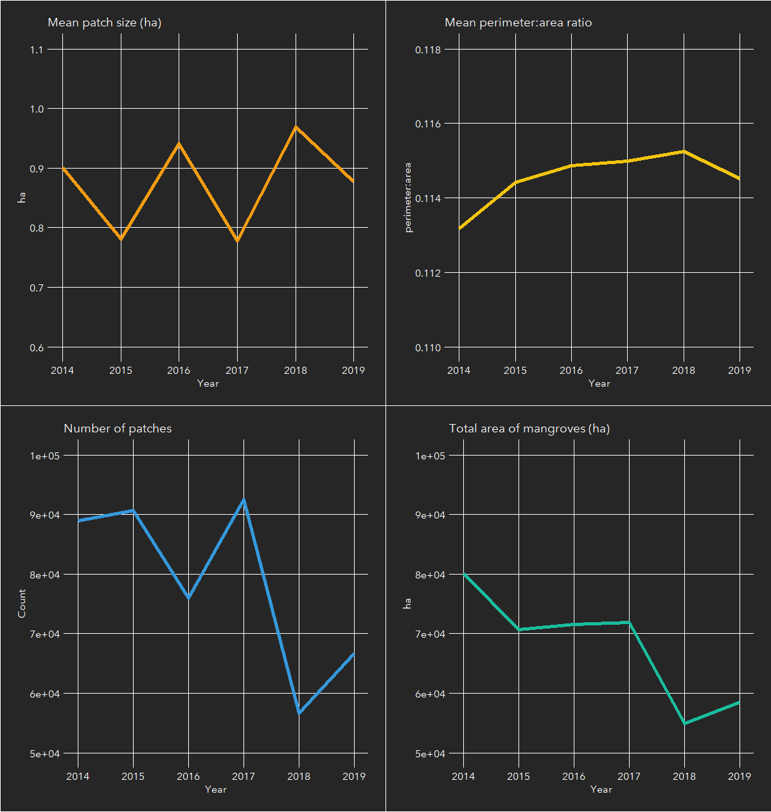

Mangroves & Water Quality in Cambodia
May 5, 2020For my proof of concept project for my masters program, I investigated mangrove forest fragmentation and coastal turbidity in Southwest Cambodia.
Skills: Google Earth Engine, R, land cover classification, data visualization, report writing
Graphical abstract

Abstract
Mangrove forests are a highly productive ecosystem that provide numerous ecosystem services to coastal communities. Mangroves can trap sediments and filter out harmful substances from runoff. This water filtration will be crucial in mitigating the projected decline in water quality driven by increased human development and extreme precipitation due to climate change. Despite these benefits, mangrove forests are being deforested with especially high rates in Cambodia. The resulting mangrove fragmentation may lead to a decline in the efficacy of its ecosystem services, including water filtration. This study intends to compare trends in mangrove cover change and coastal turbidity in Southwest Cambodia between 2014 to 2019. Mangrove cover maps were created in Google Earth Engine using Landsat 8 OLI imagery. Imagery was pre-processed to remove clouds and to generate spectral indices to assist a random forest classifier. Landscape metrics were extracted from the resulting mangrove cover maps. Turbidity was derived for the coastal region within a 5 km buffer from the shoreline. Total mangrove cover decreased from 53,628 to 37,977 ha between 2014 and 2019. Despite this decrease, there were no significant temporal trends in mean patch size (p-value = 0.071), mean perimeter-area ratio (p-value = 0.4524), or total number of patches (p-value = 0.1329) identified by the Mann-Kendall trend test. Similarly, there was no significant temporal trend detected for mean coastal turbidity (p-value = 0.2597). The lack of significant temporal trends across the variables could be a result of averaging metrics across a large study area, obscuring finer spatiotemporal trends. A connection between mangrove cover and adjacent water quality may still exist and warrants a different framework for investigating finer spatial differences.
Maps & Figures
Study site map 
Mangrove forest cover and coastal turbidity map for 2019

Mangrove cover change between 2014 and 2019

Results of landscape metric analysis
